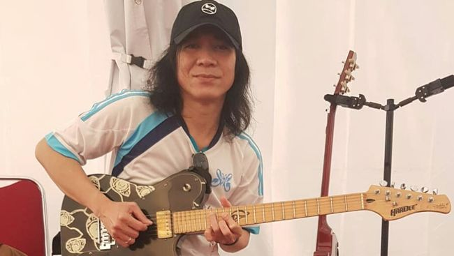

Abdee Pastikan Siap Tampil untuk Konser Ulang Tahun ke-41 Slank
Purwakarta, AboutNews-- Abdee Negara memastikan akan tampil bersama Slank saat perayaan konser ulang tahun ke-41 bertajuk Pasar Malam Empat Satoe. Konser ulang tahun itu akan digelar di JIExpo Kemayoran Jakarta pada 4 Januari 2025. Gitaris Slank itu menjelaskan dirinya sudah masuk proses penyembuhan usai sempat dirawat karena gagal ginjal dan autoimun. Abdee belakangan pun aktif latihan fisik, selain kembali ke studio bersama Slank.
"Insyaallah [personel] lengkap, karena sekarang saya sudah proses penyembuhan," ujar Abdee di Gang Potlot, Pancoran, Kamis (26/12). "Selain latihan gitarnya, latihan musiknya, saya juga latihan fisik. Jadi, insyaallah tanggal 4 ini bisa, siap,"
Ia kemudian mengungkapkan beberapa persiapan yang telah dilakukan menjelang konser spesial itu. Abdee mengaku sudah beberapa kali ikut tampil di panggung setelah keluar rumah sakit. Kondisi tubuh yang masih baik setelah manggung itu menjadi salah satu alasan Abdee siap kembali beraksi di konser Pasar Malam Empat Satoe. Di sisi lain, ia juga tidak membutuhkan perawatan khusus untuk aktivitas sehari-hari. Ia hanya diminta untuk menjaga pola makan, istirahat cukup, serta memerhatikan makanan yang menjadi pantangan.
"Sudah uji coba beberapa kali di beberapa show dan hasilnya oke. Habis main enggak terlalu pusing, jadi aman, insyaallah aman," ungkapnya.
"Enggak ada persyaratan khusus, paling kalau untuk saya sendiri jaga makan, istirahat cukup, ada beberapa yang enggak boleh sama dokter. Itu aja sih, simpel," lanjut Abdee.
Abdee sempat menjalani perawatan di rumah sakit sekitar satu bulan sejak 18 September 2024 lalu dan kondisinya disebut terus mengalami penurunan. Kakak Abdee, Buddy Ace, mengatakan musisi berusia 55 tahun itu dirawat karena kondisi autoimun yang diidapnya. Kondisi ini muncul akibat transplantasi ginjal yang sempat ia jalani pada 2016.
Selain itu, dia mengatakan Abdee juga disebut sempat mengalami pendarahan perut pada 14 Oktober lalu. Ia kemudian mulai pulih hingga diizinkan rawat jalan sambil cuci darah dua Sementara itu, Pasar Malam Empat Satoe digelar sebagai tanda perayaan 41 tahun Slank yang akan ulang tahun pada 26 Desember 2024. Konser ini juga menjadi ajang tahunan yang dirayakan Slank, seperti saat mereka mengadakan konser Slank Joged 40ever pada 28 Desember 2023. Pasar Malam Empat Satoe akan menggabungkan suguhan konser dengan pasar malam. Dengan itu, akan ada berbagai wahana permainan yang juga tersedia di sekitar panggung. Penampilan Slank akan turut diramaikan sederet musisi pembuka alias opening act, mulai dari Feel Koplo, NDX AKA, dan Idgitaf.